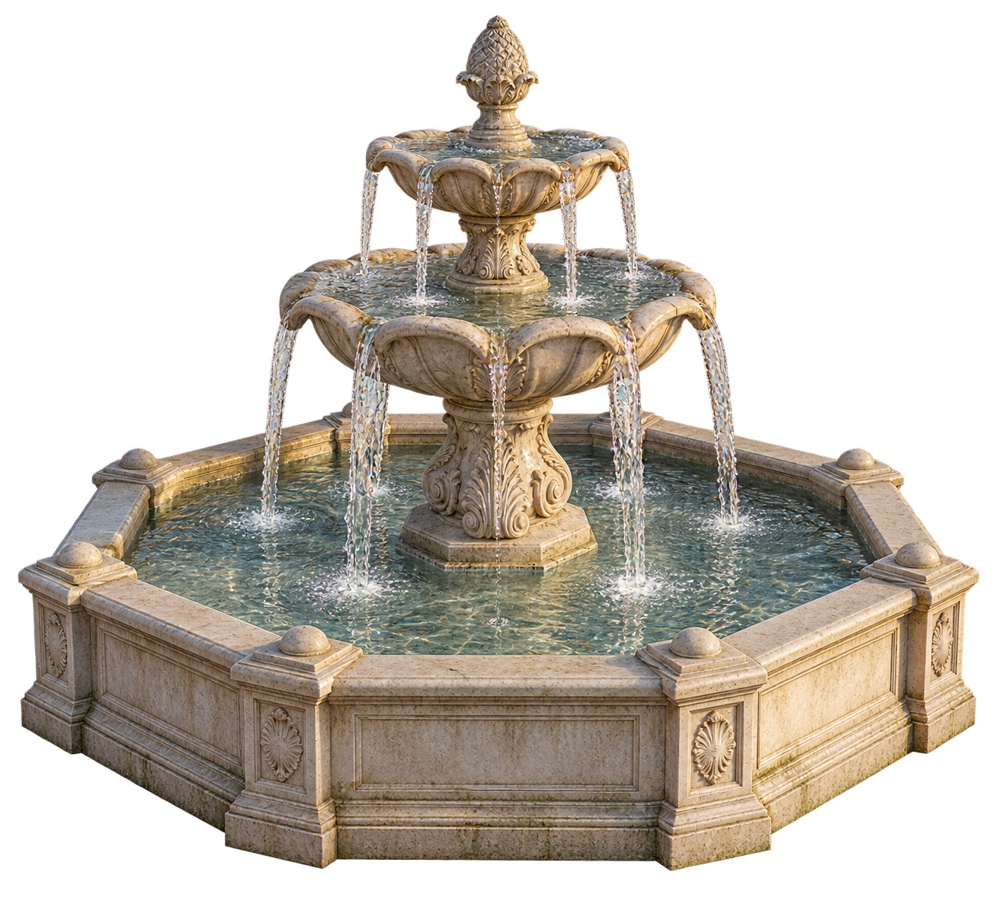
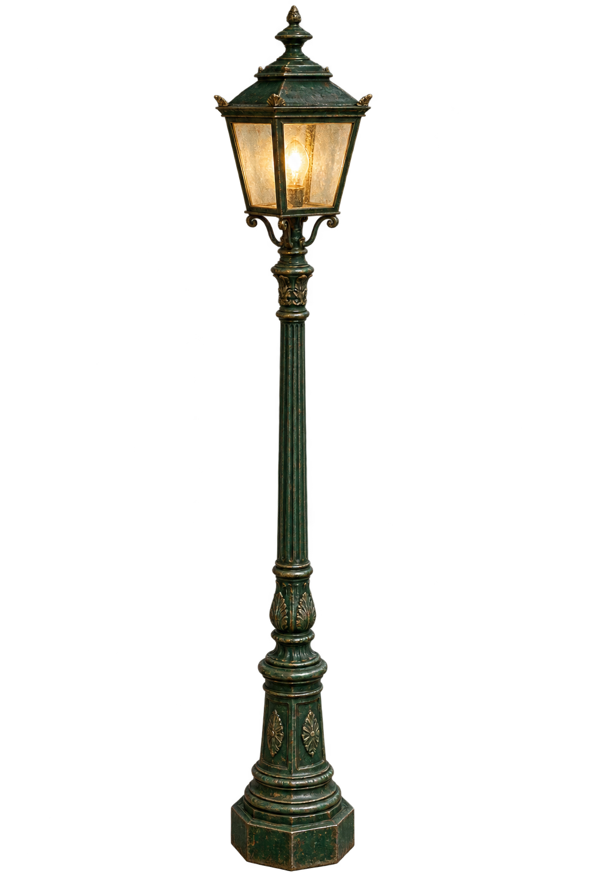
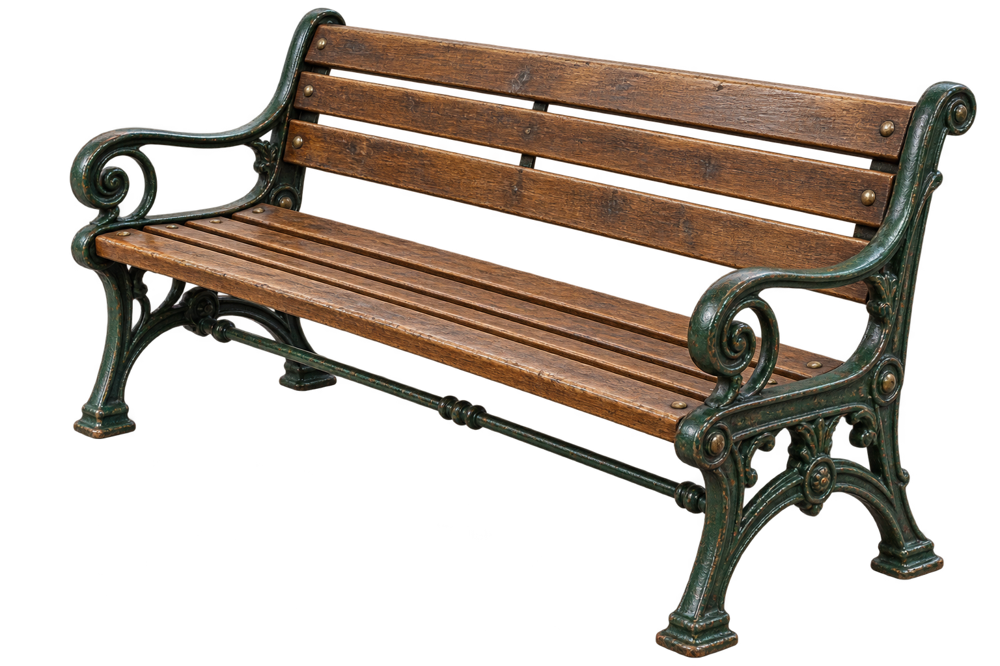
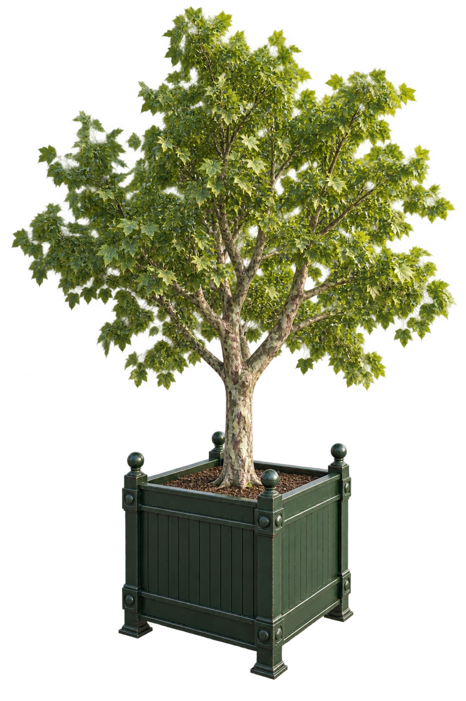
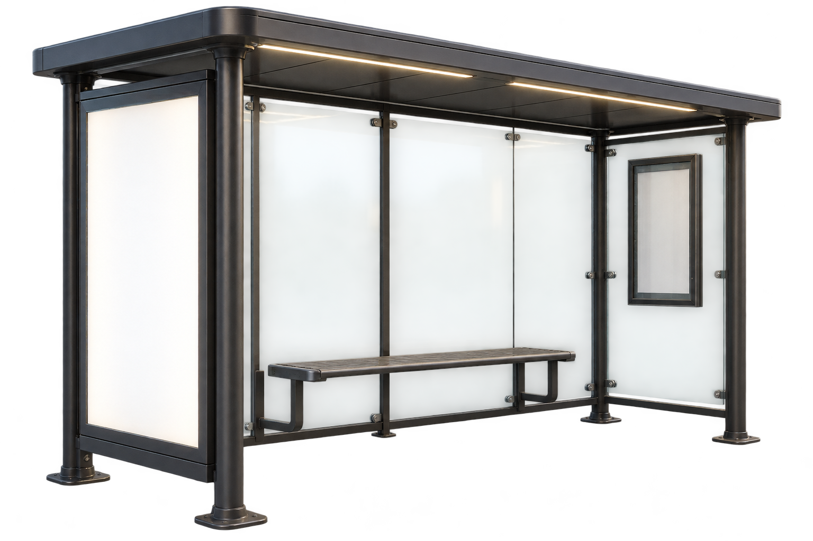
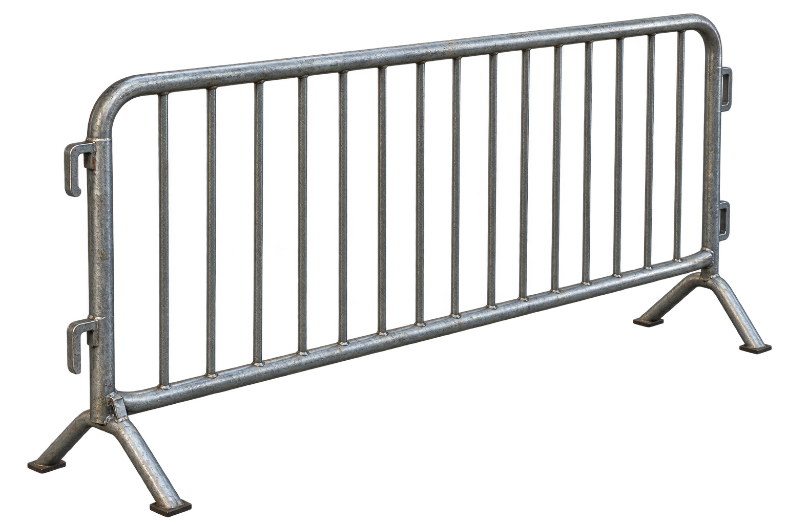
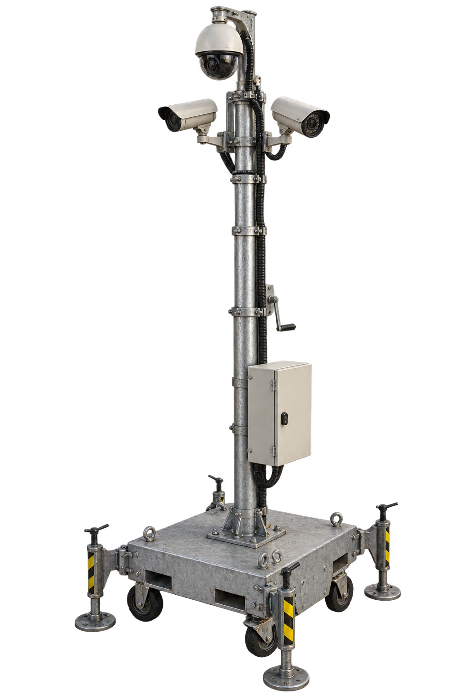
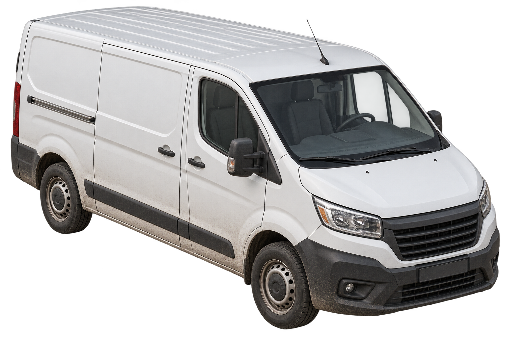

CITY HOLD — straatobjecten
Bouwreferenties. Maten zijn spelontwerpdoelen; geen GLB-modellen.

Fontein — [4.8, 3.6, 4.8] m (X/Y/Z)
Lantaarn — [0.65, 3.8, 0.65] m (X/Y/Z)
Bankje — [1.8, 0.85, 0.65] m (X/Y/Z)
Boom in plantenbak — [2.8, 4.5, 2.8] m (X/Y/Z)
Bushokje — [4, 2.6, 1.6] m (X/Y/Z)
Dranghek — [2.3, 1.1, 0.55] m (X/Y/Z)
Cameramast — [1.8, 5.5, 1.8] m (X/Y/Z)
Bestelbus — [2, 2.5, 5.2] m (X/Y/Z)